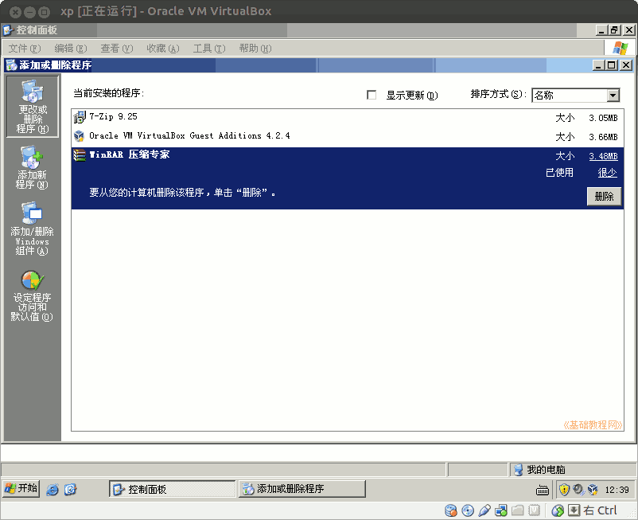

2011-2012 第二学期九年级系统安装教学设计
作者：TeliuTe 来源：基础教程网
八、学会添加删除程序 返回目录 下一课
（一）教学设计
1、学习目标：学会添加删除程序
2、注意事项：先安装再卸载，要不压缩包没法解压了
3、教学过程：
1）教师准备学案和板书；
2）学生整队进入，开机抄黑板上笔记；
3）教师讲解板书演示操作；
4）学生打指法、日志、完成操作；
5）教师打勾记录学生指法成绩，检查日志和操作；
注：学生抄完笔记就开始打指法、日志，老师讲完后再继续完成；
（二）板书设计(学生笔记)
第8课 学会添加删除程序
1、进校园网、软件下载、7z925
2、双击7z925、Next、I agree、Next、关闭
3、开始－程序－7zip－工具－选项
4、点选 7z、rar、zip 压缩格式、确定
5、点开始－控制面板－添加删除程序－WinRAR－卸载－确定
操作图示：

（三）课后记 2012-04-13 17:10
比想像中的要简单的多，快的不到5分钟就做完了
然后去写日志，不许抄黑板上的，发现相互抄袭太多
--
日志写两条，一条是学到的知识，一条是学习的体会
然后还有遇到的问题，解决的方法，学习的感受
--
把板书打到记事本里，直接在屏幕广播的时候讲
黑板上的只是作为学生学习的辅助，不会的看看黑板
--
有几个没安装系统的，找个学生帮着安装好
实际也很快，只是需要老师指点一下，找个学习好爱助人的
--
讲的还是快了点，中间还穿插着学习方法
知识很简单，操作步骤多，学的时候注意绕过弯
--
安装一个7zip把WinRAR卸载掉，两个都是压缩软件
只是一个免费一个是商业软件，商业需要交钱的用替代的
--
italc 还是出问题，需要关掉再重开才能解开
等下学期试试12.04的，看看能否好一些，系统也成熟多
--
软件卸载放到最后，操作完成放在那儿让老师检查勾一下
可以先最小化，等老师过来再检查即可，不允许吵着乱喊
--
整个内容分为三块，安装、设置、卸载
前两个是前面学过的，刚好复习一下，也有连续性
--
返回目录 下一课
本教程由86团学校TeliuTe制作|著作权所有
基础教程网：http://teliute.org/
美丽的校园……
转载和引用本站内容，请保留作者和本站链接。